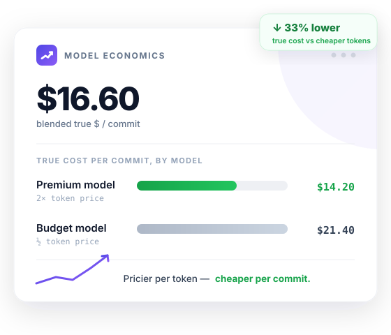
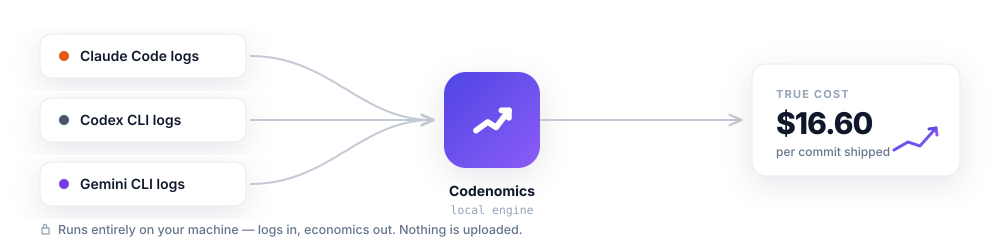
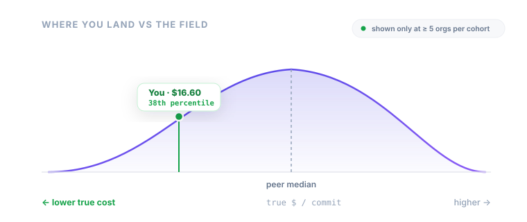

Every token dashboard tells you what you burned. Codenomics tells you what you got — the true cost per commit, compute plus the human attention behind it, across Claude Code, Codex, and Gemini. All computed on your machine.

Coding agents now out-spend every other AI tool in engineering. Teams burn tens of thousands a month and can't answer the only question that matters: is the expensive model actually worse value? Tokens and traces don't tell you. Shipped work does.
A model that costs 2× per token but needs half the prompts, fewer corrections, and less of your time to ship the same commit wins on true cost. That comparison is invisible on a token meter — and it's the whole point of Codenomics.
In one developer's 7-week dataset — 884 sessions, 811 commits across Claude Code and Codex — the model priced 2× higher per token shipped commits at ~⅓ lower true cost than a model half its token price, because it needed fewer prompts and less hands-on time. The compute bill alone wouldn't show it. How this is measured →
Single-developer sample; drivers set to $4/prompt and $300/hr; "commit" is a proxy for shipped work (see methodology). Your numbers depend on your drivers and task mix — run npx codenomics report on your own logs.
Codenomics reads the logs your agents already write to disk and turns them into economics — entirely locally.

Detects which agents you run and writes a config. Nothing leaves your machine.
Parses Claude Code, Codex, and Gemini logs into per-session economics in seconds.
Local dashboard, or generate weekly/monthly reports for the team and Slack.
Compute cost plus the human attention and time behind each commit — the one number that ranks models and agents by value, not volume.
Claude Code, Codex CLI, and Gemini CLI normalized into a single model — including subagent work most tools miss entirely.
What's a prompt of your attention worth? Your loaded hourly rate? Set the inputs; every metric updates instantly. Your economics, your assumptions.
Dollar or token limits per day, week, or month — globally or per project. Breaches fail a one-line cron check, so overruns surface before the invoice.
Weekly and monthly Markdown + HTML with prior-period deltas, top sessions, and plain-English findings — "route these jobs to a cheaper model, save $X." Slack-ready.
Prompts, code, and transcripts never leave your machine. The dashboard binds to localhost. Read the source and verify it yourself.
Codenomics reads logs that already exist on disk and derives metrics locally. Nothing is uploaded by any command today. When team sync arrives, it sends aggregate token/cost numbers and project labels only — never prompts, code, or transcripts (project labels are path-derived and can be hashed). See the privacy model →
Run it locally and you learn your true $/commit and which of your models wins. The one question a single machine can't answer is "compared to what?" — that needs a view across many teams. It's the one number you can't compute alone, and the reason Team exists.

The benchmark is built only from opt-in, aggregates-only sync — token and outcome counts per day, model, and project label. Prompts, code, and transcripts never leave any machine; inspect the exact payload with codenomics sync --json. Contribute anonymized aggregates, see where you stand.
Early and growing: we're seeding the baseline from design partners and a multi-month founder dataset, and we show sample size honestly — no "industry standard" claims at small n. Join the founding cohort → Design partners get 3 months of Team free and help define the baseline.
The local tool is open-source and free. Team adds the benchmark — how your agent economics compare across the field — plus org-wide rollups, for the leaders who own the budget.
npx codenomics init — it detects the AI coding tools already on your machine (Claude Code, Codex, Gemini) and writes a local config. No account, no sign-up.npx codenomics serve — your private dashboard opens at http://localhost:3737. Your code, prompts, and transcripts never leave your machine.Already have logs from Claude Code, Codex, or Gemini? init reads what's already on disk — your first dashboard is populated instantly, nothing to instrument.